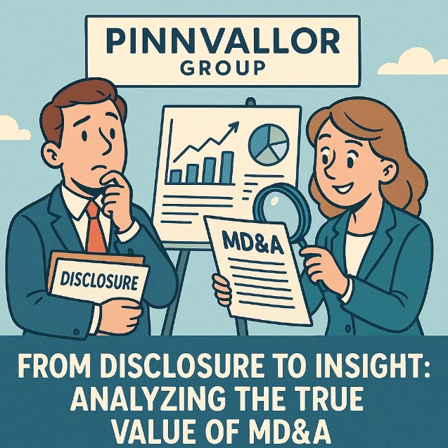

From Disclosure to Insight: Analyzing the True Value of MD&A
In the realm of corporate financial reporting, numbers alone rarely tell the full story. While financial statements provide the hard data—revenues, expenses, profits, and losses—it’s the narrative that surrounds them that often holds the key to deeper understanding. Enter the Management Discussion and Analysis (MD&A) section, a vital yet sometimes overlooked part of a company’s annual or quarterly report.
What if the most valuable insights in a financial report aren’t in the numbers, but in the narrative?
Beneath the financials lies a narrative that shapes investor confidence. MD&A bridges the gap between numbers and vision.
This blog explores what MD&A is, why it matters, and how to effectively analyze it to gain actionable insights about a company’s strategy, performance, and risk outlook.
What is MD&A?
Management Discussion and Analysis (MD&A) is a section within a company’s financial filings (such as Form 10-K or 10-Q in the U.S. or annual reports globally) where management provides context to the financial statements. This narrative aims to help investors and stakeholders understand the financial results from the perspective of the company’s executives.
It typically covers:
- Business overview and strategy
- Results of operations
- Liquidity and capital resources
- Market conditions and risks
- Forward-looking statements and future plans
MD&A acts as a bridge between the numbers and the narrative—between past performance and future potential.
Why MD&A Matters
1. Contextualizing Financial Statements
While financial statements present data, MD&A explains the “why” behind the numbers. A drop in revenue, for example, might be explained by a supply chain disruption or strategic exit from a low-margin market.
2. Providing Forward-Looking Information
Unlike financial statements, which are historical in nature, MD&A often includes management’s expectations about future performance, industry trends, and planned capital expenditures.
3. Revealing Risk Factors
MD&A sections frequently highlight known risks that could materially affect the company’s performance. This is invaluable for risk-conscious investors.
4. Assessing Management Credibility
Over time, comparing past forward-looking statements with actual results helps gauge how realistic and honest management has been—crucial for building investor trust.
Key Components of MD&A and How to Analyze Them
1. Business Overview and Strategic Outlook
What to look for:
- Clarity in describing the business model
- Strategic priorities and goals
- Major developments (M&A, divestitures, market expansion)
Analytical Tip: Compare the strategy outlined with industry trends and peer actions. Does the strategy seem reactive or visionary?
2. Results of Operations
What to look for:
- Year-over-year or quarter-over-quarter performance
- Explanation for changes in revenue, cost of goods sold, operating expenses
Analytical Tip: Look for alignment between management’s explanation and financial statement trends. Discrepancies may indicate red flags.
3. Liquidity and Capital Resources
What to look for:
- Cash flow discussions
- Debt management strategies
- Capital expenditures and financing plans
Analytical Tip: Assess whether the company’s cash flow supports its strategic goals. Watch for signs of over-leverage or cash burn.
4. Critical Accounting Estimates
What to look for:
- Judgments and estimates in areas like revenue recognition, asset impairment, or inventory valuation
Analytical Tip: Evaluate whether management’s assumptions are conservative or aggressive relative to industry norms.
5. Forward-Looking Statements
What to look for:
- Growth projections
- Risk outlook
- Future initiatives and innovation plans
Analytical Tip: Cross-check these with macroeconomic indicators and competitive positioning. Are the projections realistic?
Best Practices for MD&A Analysis
- Read MD&A with a skeptical lens: Be aware that MD&A is unaudited and subjective.
- Compare across periods: Look at how the tone and content have evolved year over year.
- Use peer benchmarking: Evaluate MD&A in the context of what competitors are disclosing.
- Watch for buzzwords and vague language: Terms like “synergies,” “transformative,” or “robust growth” need clear backing.
The MD&A Edge for Stakeholders
For Investors:
- Identify red flags or growth opportunities before they reflect in stock prices.
- Better understand how a company positions itself for long-term success.
For Analysts:
- Deepen qualitative insights to complement quantitative models.
- Strengthen recommendations by aligning management commentary with financial performance.
For Internal Stakeholders:
- Align communication strategies with shareholder expectations.
- Improve strategic reporting for enhanced transparency.
Conclusion
MD&A is more than just a regulatory requirement—it’s a window into the mind of management. By moving beyond passive reading and engaging in critical analysis, stakeholders can transform disclosures into insights and narrative into foresight. In an era where information is abundant but insight is rare, mastering the art of MD&A analysis offers a true competitive edge.